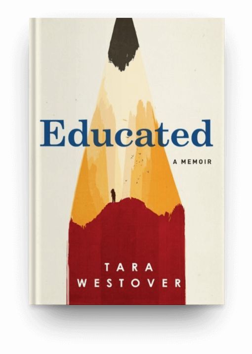

Rekomendasi Buku
Judul Buku: The Great Gatsby

Penulis: F. Scott Fitzgerald
Deskripsi: Buku ini adalah salah satu karya sastra terbesar di Amerika. Cerita ini mengungkapkan keindahan dan kebobrokan dari mimpi Amerika pada masa itu.
Judul Buku: To Kill a Mockingbird

Penulis: Harper Lee
Deskripsi: Novel ini menceritakan tentang ketidakadilan sosial dan rasisme di Selatan Amerika melalui perspektif seorang anak perempuan.
Judul Buku: Atomic Habits

Penulis: James Clear
Deskripsi: Buku ini adalah tata cara membangun habit dari perubahan kecil setiap hari yang akan mendatangkan pengaruh revolusioner.
Judul Buku: Berani Tidak Disukai

Penulis: Ichiro Kishimi & Fumitake Koga
Deskripsi: Buku ini mengungkapkan bagaimana Anda dapat meraih kebahagiaan yang hakiki dan menjadi sosok yang Anda idam-idamnkan.
Judul Buku: Educated
Penulis: Tara Westover
Deskripsi: Tokoh Tara tak pernah bersekolah formal sampai usia 17 tahun. Universitas adalah tempat pertama kali menerima pendidikan di luar yang diajarkan ayah dan ibunya di rumah.